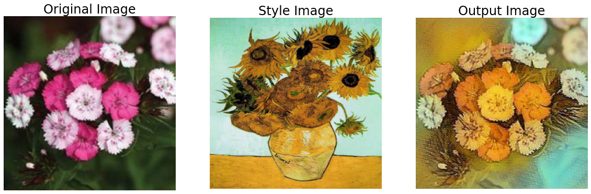

Flooming

담당 역할
- 꽃 이미지 데이터 수집 및 Labeling
- 분류 및 변환 모델 구축 및 오픈소스 이용
- 모델 학습 및 결과 분석
- 서버와 통신을 위해 코드 최적화 작업
성과
- 구글 플레이 스토어 및 애플 앱스토어 출시 (Flooming)
- 꽃 이미지 분류 정확도 95%
회고
- Problem 1. 매우 느린 모델 추론 속도
- 분류 모델은 VGG16으로 한 경우, 추론 속도가 3초로 매우 느리다는 문제를 파악
- 모바일 어플리케이션에 최적화된 구조의 MobileNetV3와 ShuffleNetV2로 재학습 후 시도한 결과 0.2~0.3초의 추론 속도를 달성
- 그림 변환 모델의 경우 1024 사이즈의 이미지로 추론할 경우 속도가 약 15초로 매우 느리다는 문제를 파악
- 이미지 사이즈를 512로 줄이고 추론 코드를 최적화 작업을 통해 속도 개선
- Problem 2. 기준에 미치지 못하는 Pix2Pix의 성능
- 원인을 파악한 결과, Input image와 Label image의 차이가 적음
- 이후 AutoEncoder 등의 다른 모델로 시도해본 후, Neural Style Transfer로 변경
- 또한 별이 빛나는 밤에, 모나리자, 우는 여인 등 유명 화가의 그림을 Content Image로 활용
시기 및 사용 기술
- 진행 기간: 2022.06.17 ~ 2022.08.31
- 인원: Android FE (1), iOS FE (1), BE (1), DL (1)
- 사용 기술: PyTorch, Fast API
- 모델: VGG16, MobileNetV3, ShuffleNetV2, Pix2Pix, AutoEncoder, Neural Style Transfer